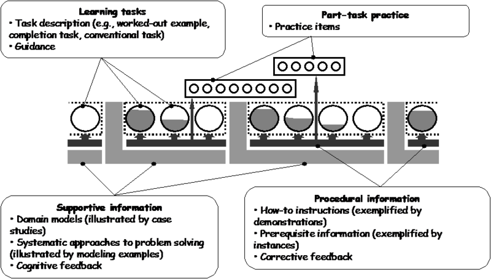

Deploying UCP for Evaluation and in Production
Docs Resource - Beta Docs
Docker CaaS Training Series 1: Deploying UCP for Evaluation and in Production
Welcome to the course!
Installing DUCP in a local environment
Installing DUCP for a production environment
Understand Docker basics
A Note on Pedagogy
Docker believes in learning by doing, with support.

Passing the course: 70+ on final assessment.
Intro to Instructor
Insert Pic Here
Agenda
Introduction
Pre-assessment
Docker Primer + Access Course Content
Mini-Lecture: Docker Architecture and Components
Task: Deploying DUCP as a Sandbox
Mini-lecture: Intro Docker Ops and Docker Datacenter
Task: Deploying DUCP in a Production Environment
Task: Integrate with DTR
Mini-lecture: Docker Trusted Registry
Post-assessment
Next Steps
Get your course content
Demo
You just learned Docker basics!
Containers ✓
Images ✓
Pull/Run ✓
Containers
Isolated application platform
Contains everything needed to run your application
Based on one or more images
Images
Read only template used to create containers
Built by you or other Docker users
Stored in Docker Hub, Docker Trusted Registry or your own Registry